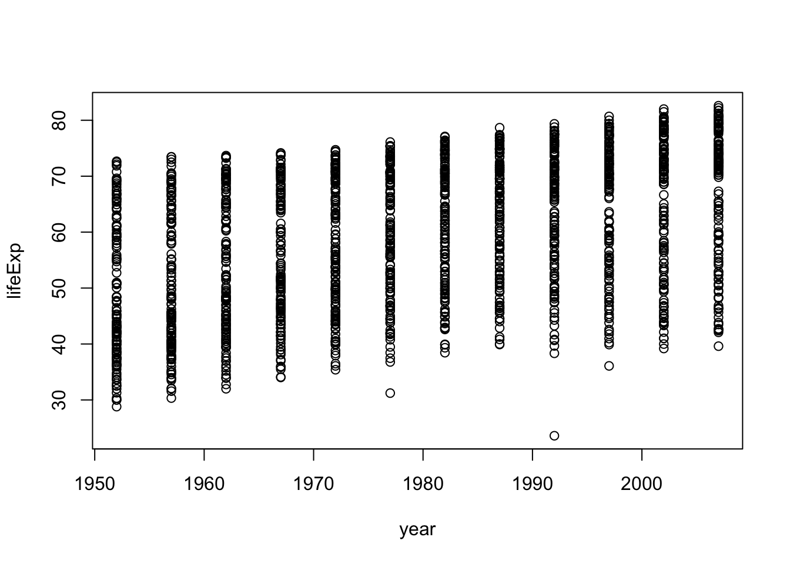
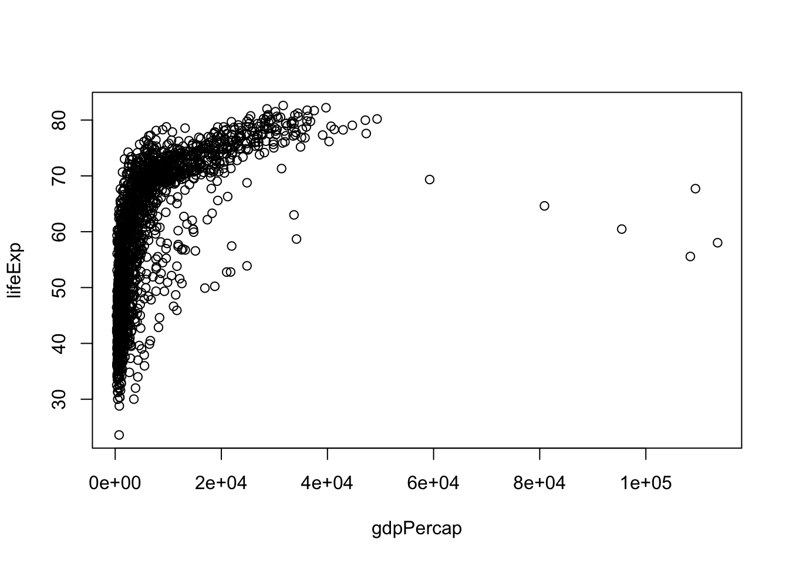
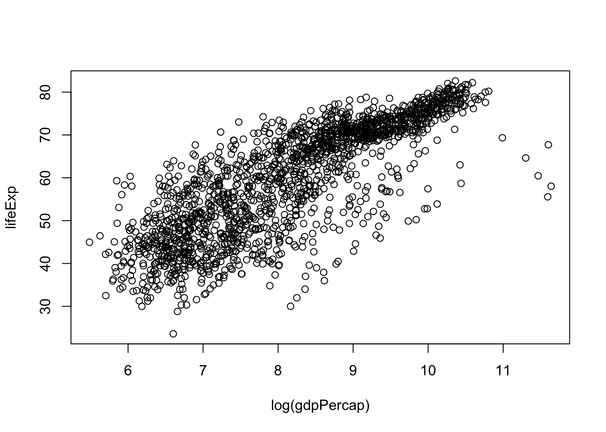
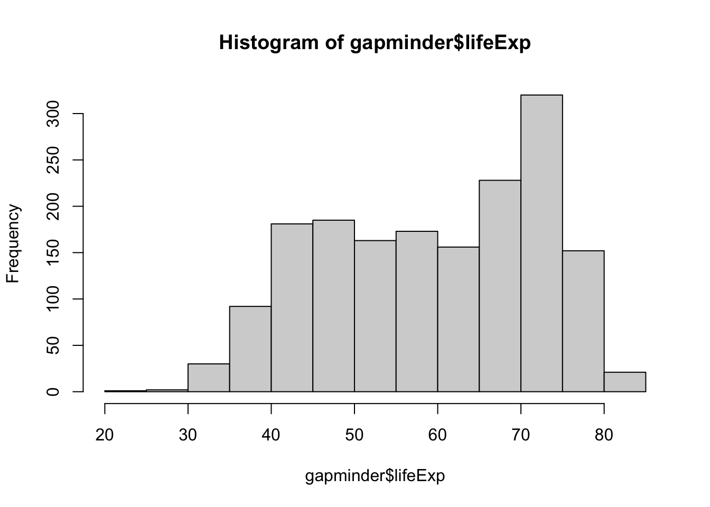
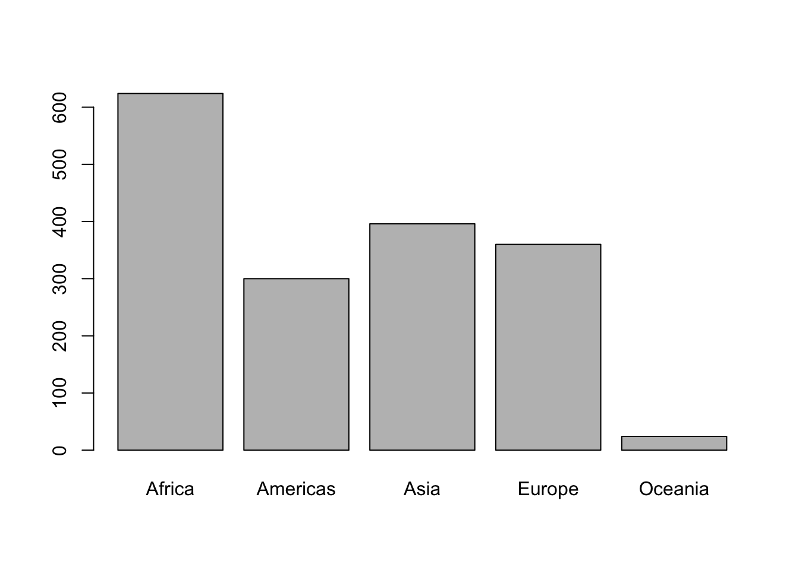

install.packages("gapminder")Lab 1: Getting started with R
Let’s get started!
Launch RStudio/R.
Notice the default panes:
- Console (entire left)
- Environment/History (tabbed in upper right)
- Files/Plots/Packages/Help (tabbed in lower right)
FYI: you can change the default location of the panes, among many other things: Customizing RStudio.
Loving Projects
Keeping all the files associated with a project organized together – input data, R scripts, analytical results, figures – is such a wise and common practice that RStudio has built-in support for this via its projects.
Let’s make one to use for the rest of this class. Note if you’ve already made a project for this class, you don’t need to make another one. To make a project: File > New Project…. The directory name you choose here will be the project name. Call it whatever you want.
This workflow will serve you well in the future:
- Create an RStudio project for an analytical project
- Keep inputs there (we’ll soon talk about importing)
- Keep scripts there; edit them, run them in bits or as a whole from there
- Keep outputs there (like the PDFs and figures)
Avoid using the mouse for pieces of your analytical workflow, such as loading a dataset or saving a figure. Terribly important for reproducibility and for making it possible to retrospectively determine how a numerical table or PDF was actually produced (searching on local disk on filename, among .R files, will lead to the relevant script).
Writing a script
Next, open a new R script and develop and run your code from there. In RStudio, use File > New File > R Script. Save this script with a name ending in .r or .R, containing no spaces or other funny stuff, and that evokes whatever it is we’re doing today. Example: lab-01-getting-started.r.
Get the Gapminder data
We will work with some of the data from the Gapminder project. If you haven’t already done so, go ahead and install it from CRAN like so:
Now load the package:
library(gapminder)Data frames are awesome
Whenever you have rectangular, spreadsheet-y data, your default data receptacle in R is a data frame. Do not depart from this without good reason. Data frames are awesome because…
- Data frames package related variables neatly together,
- keeping them in sync vis-a-vis row order
- applying any filtering of observations uniformly
- Most functions for inference, modeling, and graphing are happy to be passed a data frame via a
data =argument. This has been true in base R for a long time. - The set of packages known as the tidyverse takes this one step further and explicitly prioritizes the processing of data frames. This includes popular packages like
dplyrandggplot2. In fact the tidyverse prioritizes a special flavor of data frame, called atibble.
Data frames – unlike general arrays or, specifically, matrices in R – can hold variables of different flavors, such as character data (e.g., subject ID or name), quantitative data (e.g., reaction times), and categorical information (e.g., experimental vs. control).
Meet the gapminder data frame or “tibble”
By loading the gapminder package, we now have access to a data frame by the same name. Get an overview of this with str(), which displays the structure of an object.
str(gapminder)tibble [1,704 × 6] (S3: tbl_df/tbl/data.frame)
$ country : Factor w/ 142 levels "Afghanistan",..: 1 1 1 1 1 1 1 1 1 1 ...
$ continent: Factor w/ 5 levels "Africa","Americas",..: 3 3 3 3 3 3 3 3 3 3 ...
$ year : int [1:1704] 1952 1957 1962 1967 1972 1977 1982 1987 1992 1997 ...
$ lifeExp : num [1:1704] 28.8 30.3 32 34 36.1 ...
$ pop : int [1:1704] 8425333 9240934 10267083 11537966 13079460 14880372 12881816 13867957 16317921 22227415 ...
$ gdpPercap: num [1:1704] 779 821 853 836 740 ...str() will provide a sensible description of almost anything and, worst case, nothing bad can actually happen. When in doubt, just str() some of the recently created objects to get some ideas about what to do next.
We could also print the gapminder object itself to screen. However, if you’ve used R before, you might be reluctant to do this, because large datasets just fill up your Console and provide very little insight.
Try printing the gapminder object to screen. What happens?
gapminder# A tibble: 1,704 × 6
country continent year lifeExp pop gdpPercap
<fct> <fct> <int> <dbl> <int> <dbl>
1 Afghanistan Asia 1952 28.8 8425333 779.
2 Afghanistan Asia 1957 30.3 9240934 821.
3 Afghanistan Asia 1962 32.0 10267083 853.
4 Afghanistan Asia 1967 34.0 11537966 836.
5 Afghanistan Asia 1972 36.1 13079460 740.
6 Afghanistan Asia 1977 38.4 14880372 786.
7 Afghanistan Asia 1982 39.9 12881816 978.
8 Afghanistan Asia 1987 40.8 13867957 852.
9 Afghanistan Asia 1992 41.7 16317921 649.
10 Afghanistan Asia 1997 41.8 22227415 635.
# ℹ 1,694 more rowsThe reason your data frame doesn’t fill up the whole screen is because the gapminder package uses a special type of data frame from the tidyverse package.
The tidyverse offers a special case of R’s default data frame: the “tibble”, which is a nod to the actual class of these objects, tbl_df.
## see? it's still a regular data frame, but also a tibble
class(gapminder)[1] "tbl_df" "tbl" "data.frame"This means you can boldly boldly print gapminder to screen! It is a tibble (and also a regular data frame) and the tidyverse provides a nice print method that shows the most important stuff and doesn’t fill up your Console.
For a comparison, base R comes with a data frame called iris. Type iris in the console and behold the ugliness of how it prints to the screen.
irisThe iris data frame is only a data frame.
class(iris)[1] "data.frame"If you are dealing with plain vanilla data frames, you can rein in data frame printing explicitly with head() and tail(). Read the help pages to learn how to use the head and tail functions.
head(iris) Sepal.Length Sepal.Width Petal.Length Petal.Width Species
1 5.1 3.5 1.4 0.2 setosa
2 4.9 3.0 1.4 0.2 setosa
3 4.7 3.2 1.3 0.2 setosa
4 4.6 3.1 1.5 0.2 setosa
5 5.0 3.6 1.4 0.2 setosa
6 5.4 3.9 1.7 0.4 setosatail(iris) Sepal.Length Sepal.Width Petal.Length Petal.Width Species
145 6.7 3.3 5.7 2.5 virginica
146 6.7 3.0 5.2 2.3 virginica
147 6.3 2.5 5.0 1.9 virginica
148 6.5 3.0 5.2 2.0 virginica
149 6.2 3.4 5.4 2.3 virginica
150 5.9 3.0 5.1 1.8 virginicaMore ways to query basic info on a data frame:
names(gapminder)[1] "country" "continent" "year" "lifeExp" "pop" "gdpPercap"ncol(gapminder)[1] 6length(gapminder)[1] 6dim(gapminder)[1] 1704 6nrow(gapminder)[1] 1704A statistical overview can be obtained with summary():
summary(gapminder) country continent year lifeExp
Afghanistan: 12 Africa :624 Min. :1952 Min. :23.60
Albania : 12 Americas:300 1st Qu.:1966 1st Qu.:48.20
Algeria : 12 Asia :396 Median :1980 Median :60.71
Angola : 12 Europe :360 Mean :1980 Mean :59.47
Argentina : 12 Oceania : 24 3rd Qu.:1993 3rd Qu.:70.85
Australia : 12 Max. :2007 Max. :82.60
(Other) :1632
pop gdpPercap
Min. :6.001e+04 Min. : 241.2
1st Qu.:2.794e+06 1st Qu.: 1202.1
Median :7.024e+06 Median : 3531.8
Mean :2.960e+07 Mean : 7215.3
3rd Qu.:1.959e+07 3rd Qu.: 9325.5
Max. :1.319e+09 Max. :113523.1
Although we haven’t begun our formal coverage of visualization yet, it’s so important for getting to know a dataset that we will make a few figures anyway. Here we use only base R graphics, which are very basic.
plot(lifeExp ~ year, gapminder)
plot(lifeExp ~ gdpPercap, gapminder)
plot(lifeExp ~ log(gdpPercap), gapminder)
Look at the variables inside a data frame
To specify a single variable from a data frame, use the dollar sign $. Let’s explore the numeric variable for life expectancy.
head(gapminder$lifeExp)[1] 28.801 30.332 31.997 34.020 36.088 38.438summary(gapminder$lifeExp) Min. 1st Qu. Median Mean 3rd Qu. Max.
23.60 48.20 60.71 59.47 70.85 82.60 hist(gapminder$lifeExp)
The year variable is an integer variable, but since there are so few unique values it also functions a bit like a categorical variable.
summary(gapminder$year) Min. 1st Qu. Median Mean 3rd Qu. Max.
1952 1966 1980 1980 1993 2007 table(gapminder$year)
1952 1957 1962 1967 1972 1977 1982 1987 1992 1997 2002 2007
142 142 142 142 142 142 142 142 142 142 142 142 The variables for country and continent hold truly categorical information, which is stored as a factor in R.
class(gapminder$continent)[1] "factor"summary(gapminder$continent) Africa Americas Asia Europe Oceania
624 300 396 360 24 levels(gapminder$continent)[1] "Africa" "Americas" "Asia" "Europe" "Oceania" nlevels(gapminder$continent)[1] 5The levels of the factor continent are “Africa”, “Americas”, etc. and this is what’s usually presented to your eyeballs by R. In general, the levels are friendly human-readable character strings, like “control/experimental”. But never ever ever forget that, under the hood, R is really storing integer codes 1, 2, 3, etc. Look at the result from str(gapminder$continent) if you are skeptical.
str(gapminder$continent) Factor w/ 5 levels "Africa","Americas",..: 3 3 3 3 3 3 3 3 3 3 ...Factors can be rich with booby traps for the unsuspecting but they are a necessary evil. We will learn how to work with them later in the course – in fact we’ll spend a whole lecture on factors. The pros far outweigh the cons. Specifically in modeling and figure-making, factors are anticipated and accommodated by the functions and packages you will want to use.
Here we count how many observations are associated with each continent and, as usual, try to portray that info visually. This makes it much easier to quickly see that African countries are well represented in this dataset.
table(gapminder$continent)
Africa Americas Asia Europe Oceania
624 300 396 360 24 barplot(table(gapminder$continent))
You can also refer to variables in data frame by column number. Don’t do this. It makes for code that is difficult to read. Also, if the variable changes location in your data frame you’ll end up referring to the wrong variable.
If you want to specify a variable by column number, you use double square brackets [[]]. The code below prints the first 10 entries of the fourth variable (lifeExp) in the gapminder data frame.
head(gapminder[[4]])[1] 28.801 30.332 31.997 34.020 36.088 38.438Good practices
Restarting R!
Now practice restarting R. In RStudio, use Session > Restart R.
Why do we do this? So that the code you write is complete and re-runnable. If you return to a clean slate often, you will root out hidden dependencies where one snippet of code only works because it relies on objects created by code saved elsewhere or, much worse, never saved at all. Similarly, an aggressive clean slate approach will expose any usage of packages that have not been explicitly loaded.
Restart R and re-run your code.
Use shortcuts!
I introduced you to a number of keyboard shortcuts for sending code to the console. Practice using them!
Send this code to the console using a shortcut.
x <- 3 * 4
x[1] 12R Studio offers many handy keyboard shortcuts. Also, Alt+Shift+K brings up a keyboard shortcut reference card. Take a look at these and see what shortcuts you might want to introduce into your workflow.
Test out tab-completion. Make the assignment below.
this_is_a_really_long_name <- 2.5Then type the first few characters, press TAB, add characters until you disambiguate, then press return.
But I want to do more!
Check out swirl. Swirl turns the R console into an interactive learning environment.
Swirl is a little like a text-based RPG, except it’s more fun because it teaches you R!

Work through one or more interactive tutorials that are part of the swirl package.
You’ll need to install the Swirl package, but you know how do that!
#in case you forgot how to install a package
install.packages("swirl")
#load swirl
library(swirl)
#start working through the interactive tutorials
swirl()Summary
Use Rstudio Projects!!!
Use data frames!!!
Use the tidyverse!!! This will provide a special type of data frame called a “tibble” that has nice default printing behavior, among other benefits.
When in doubt,
str()something or print something.Always understand the basic extent of your data frames: number of rows and columns.
Understand what flavor the variables are.
Learn how to use factors!!! I wouldn’t give too much thought to factors at this stage of the course, but later we’ll take a deep dive into working with factors.
Do basic statistical and visual sanity checking of each variable.
Refer to variables by name, e.g.,
gapminder$lifeExp, not by column number. Your code will be more robust and readable.
Comment your code!
Comments start with one or more
#symbols. Use them. RStudio helps you (de)comment selected lines with Ctrl+Shift+C (Windows and Linux) or Command+Shift+C (Mac).